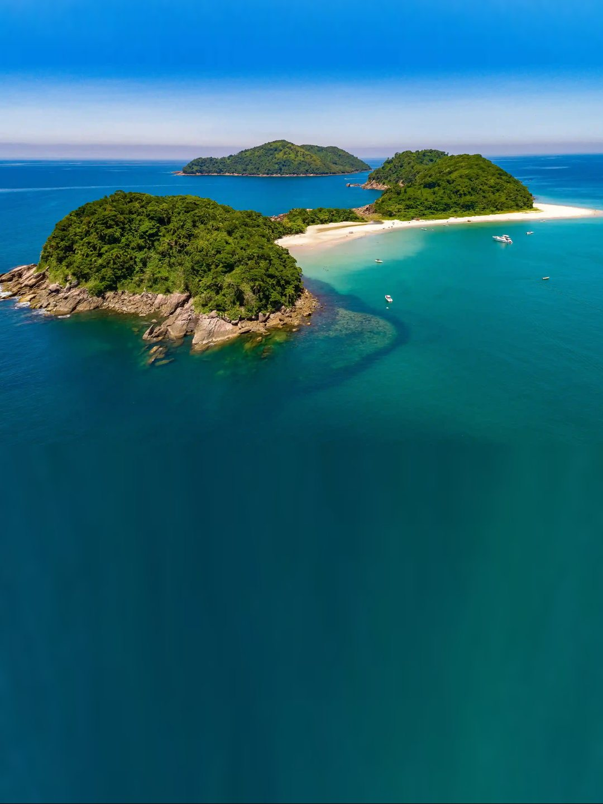

Super atenciosos e preocupados com a segurança na travessia. Amei e indiquei!Michele Batista

Passeio de barco para As Ilhas.
5 minutos até as piscinas naturais. Lancha própria para até 19 pessoas.
Barra do Sahy · Juquehy · Praia da Baleia
~5 minda Barra do Sahy até As Ilhas
4 roteiros
Escolha seu roteiro.
Roteiro 1
Travessia para As Ilhas
- ~5 a 10 min
- Volta combinada
- A partir de 3 pessoas
- Barra do Sahy
- As Ilhas você escolhe a praia

Roteiro 2
Gatos + Couves + As Ilhas
- 3 paradas
- A partir de 4 pessoas
- Barra do Sahy
- Ilha dos Gatos
- Ilha das Couves
- As Ilhas fica na praia

Roteiro 3
Montão de Trigo + Couves + As Ilhas
- ~4 horas
- A partir de 5 pessoas
- Barra do Sahy
- Montão de Trigo
- Ilha das Couves
- As Ilhas

Roteiro 4 · Completo
Gatos + Montão + Couves + As Ilhas
- ~5 horas
- A partir de 5 pessoas
- Barra do Sahy
- Ilha dos Gatos
- Montão de Trigo
- Ilha das Couves
- As Ilhas

Monte seu passeio
Chamar no WhatsApp
Escolha e chame no WhatsApp.
Roteiro
Onde você está
Horário e data
Quem vai
Adultos
Criançasaté 12 anos
Cachorros
Vídeos reais
Veja como é a bordo.


O barco
Lancha própria, pronta pro seu grupo.
- 🚤Até 19 pessoas
- ⚙️Yamaha 200HP
- 🦺Colete para todos
- ⛱️Capota de sombra
Fotos reais
Água verde, sem filtro.


Avaliações no Google
Quem foi, recomenda.
Fazemos a travessia com ele há muitos anos. Extremamente confiável e educado.Rodrigo Spina
O barco super confortável e o passeio nem se fala, lindo demais!Iasmym Kirchner
Embarque
Saída da Barra do Sahy.
Atendemos também quem está em Juquehy e na Praia da Baleia.
- EndereçoR. Srg. Vicentino Marques · Barra do Sahy, São Sebastião
- SaídasTodos os dias, 09h00 e 12h30
- WhatsApp(12) 99709-6491
- De carro até a Barra do SahyPraia da Baleia · 3 minJuquehy · 8 minCamburi · 10 minMaresias · 22 min
- Abrir rota no Maps
Dúvidas
Antes de embarcar.
Atende Juquehy e Praia da Baleia?
Sim. A saída é da Barra do Sahy, pertinho das duas.
Posso levar cachorro?
Pode! Marque no "Monte seu passeio".
Posso levar cooler e guarda-sol?
Sim, a gente ajuda a embarcar tudo.
E se chover?
Avisamos antes e reagendamos.
Quanto custa?
Depende do roteiro e do grupo. Monte o passeio e o Puruca responde no WhatsApp.